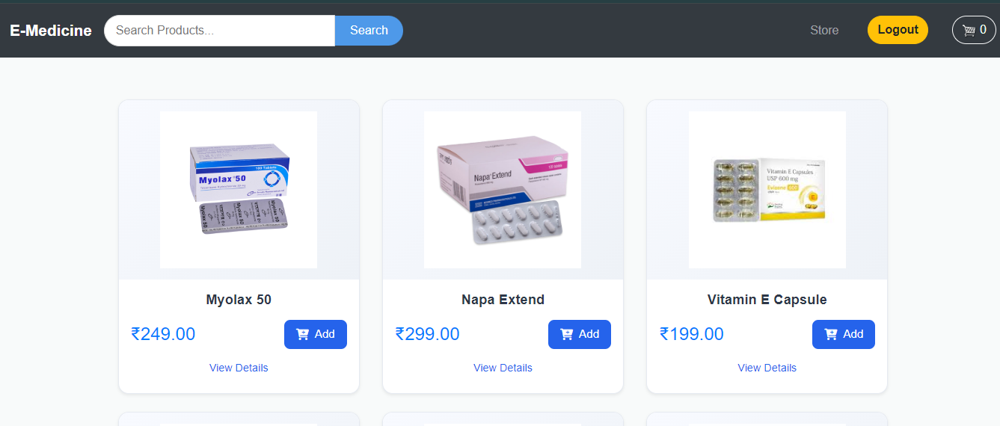
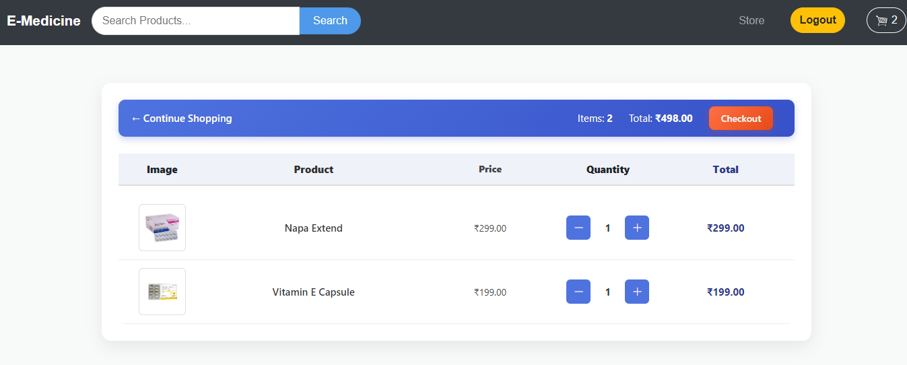

💊 E-Medicine Platform
HTMLCSSJavaScript
PythonDjangoRestApi
PostmanGitHub
Full-stack responsive e-commerce platform for medicines using Django REST, MySQL, and frontend with HTML/CSS/JS.
This project replicates an online pharmacy platform where users can browse medicines, add them to the cart, and place orders securely. The backend was built with Django REST Framework and MySQL for secure data handling, while the frontend was designed to be responsive and user-friendly. It demonstrates my ability to build scalable, full-stack e-commerce solutions with real-world use cases.
Note: Demo link and source not publicly available.